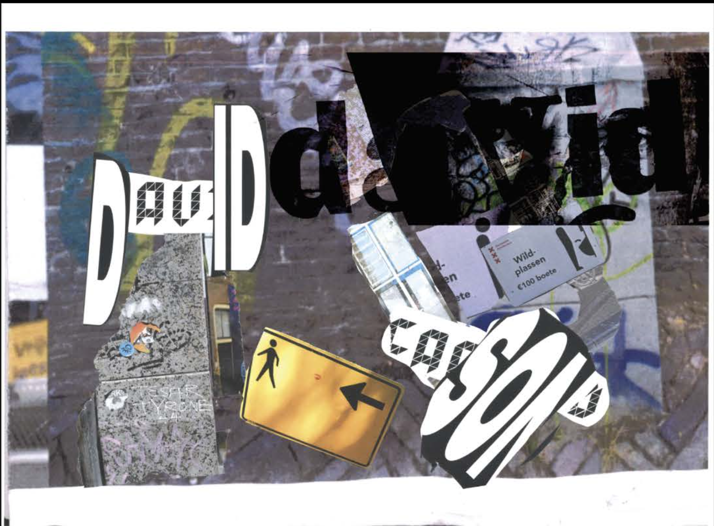
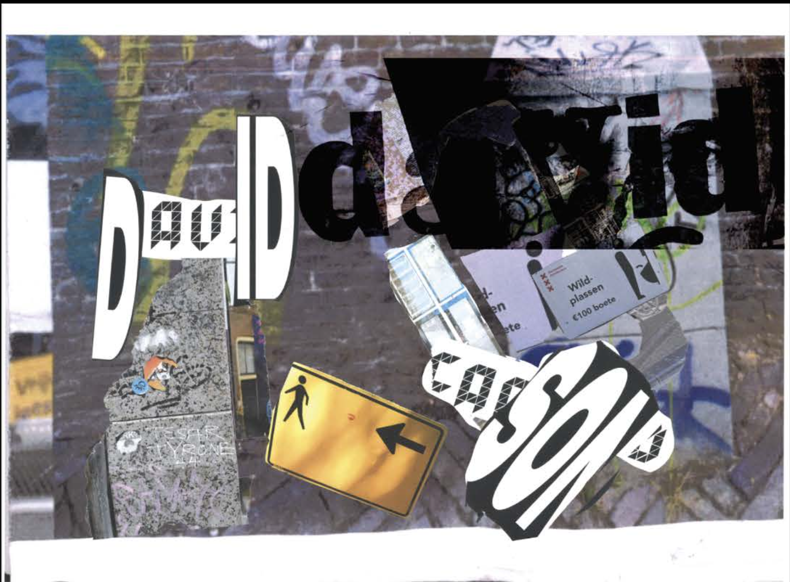

Imitating David Carson's Style
Scope
Researching a graphic designer of choice while developing the following Competencies: understanding & framing, imagining & making, conceptualizing and, reflecting & evaluating.
Project Case
Main job:
Conceptualizing
Designing
Researching
Sketching
Date:
2022.6.21
Overview:
The primary objective of the Project Visual was to develop your own style. Throughout the process, we learned various aspects, including how to think, sketch, iterate, and express ideas. Finally, we explored the work of a graphic designer we were curious about and tried to imitate their style. The question posed was: "What makes David Caron's style so unique?"
Outcome:
The result is a reflection of the process, incorporating numerous shared opinions, my take own David Carson's style and, ultimately, my own "style".
See Reflection 

All projects